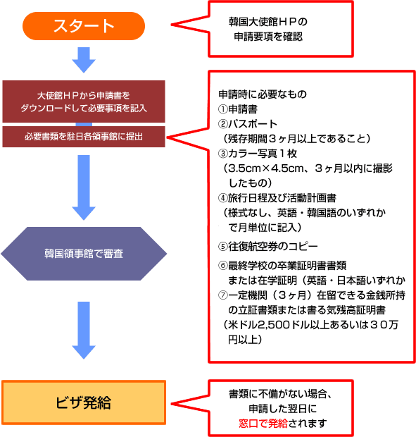

';
$header_obj->fncMenuHead_h1text = 'ワーキングホリデー協定国（韓国） | ワーホリビザ情報';
$header_obj->display_header();
include('../calendar_module/mod_event_horizontal.php');
?>
';
$header_obj->fncMenuHead_h1text = 'ワーキングホリデー協定国（韓国） | ワーホリビザ情報';
$header_obj->display_header();
include('../calendar_module/mod_event_horizontal.php');
?>
韓国国情報へ 韓国のワーキングホリデービザの取得方法についてご案内します。
ビザ取得までのステップチャート
申請可能年齢 18～30歳
申請書は日本語、英語、韓国語のいずれかで記入できます。
 韓国大使館 領事部
〒106-0047 東京都港区南麻布1-7-32 TEL 03-3455-2601～4：FAX 03-3455-2018
東京以外の公館はこちら>>
外務省ＨＰで基本情報を確認しよう
※渡航時、在外公館リストはプリントアウトして持って行こう
ビザの申請、ひとりでできますか？

ビザについて
ビザの発給要件
- 日本の国籍を有しており、18歳以上30歳以下の扶養家族を同伴しない方。
※但し,各領事館ごとに年齢制限などの違いがあります。詳細は直接お問合せ下さい。 - 韓国滞在の主目的は休暇で、就労は滞在中の資金を補うための付随的なものであること。
- 滞在予定期間の生活を維持するための相当な資金を所持していること。
関連事項
- 入国後、観光でなく就業にだけ専念してはいけません。
- 入国後、90日以上滞在する場合、直轄出入国管理事務所にて外国人登録をしなければなりません。
- 協定の趣旨に反する業種及び同国の法令により一定の資格要件を具備しなければならない職種には就業できません。
- 会話指導活動をする場合には大学卒以上の学歴を有する方、また、これと同等以上の学歴を有していることが必要です。
この場合「滞留資格外活動許可」は必要ありません。
ビザの申請、ひとりでできますか？

申請方法
申請に必要な書類 （東京で申込む場合）
- ビザ申請書（一般の申請書使用、日本語・英語・韓国語のいずれかで記入）※お住まいの都道府県を管轄する韓国大使館（領事館）のホームページでダウンロードできます。
- パスポート（残存期間3ヶ月以上あること）
- カラー写真1枚（3.5cm×4.5cm、3ヶ月以内に撮影したもの）
- 旅行日程及び活動計画書（様式なし、英語・韓国語のいずれかで月単位で記入）
- 往復航空券のコピー
- 保険証or免許証の両面コピー（申請窓口によって異なる場合があります）
- 最終学校の卒業証明書または在学証明書（英語・日本語いずれか）
- 一定期間（3ヶ月）在留できる金銭所持の立証書類または残高証明書（米ドル2,500ﾄﾞﾙ以上あるいは30万円以上）
注意事項
- 駐日本国各領事館にて受付をしています。（下表参照）
- 各総領事館によって提出書類が異なる場合があるので、ビザ申請前に管轄領事館にお問い合わせて下さい。
- 申請は無料です。
- 代理申請および郵送による申請はできません。
- 書類の不備がない場合、申請した翌日に発給されます。
- 管轄領事館への申請を原則としますが、他の領事館へ申請するときは事前に問い合わせてみてください。
- ワーキング・ホリデービザは発給日から一年間有効、ならびに韓国に入国した日から一年間滞在できます。
- ワーキング・ホリデービザは一人につき一生に一回しか取得できません。
- 滞在期間内での再入国は自由です。ただし、その場合には再入国許可の申請が必要となります。
- 滞在期間中、アルバイトに期間の制限はありません。
- 滞在期間中、語学研修の期間の制限はありません。
ビザ申請窓口のある韓国大使館及び領事館
業務時間 9:00-12:00、13:30-17:00 窓口受付は直接お問合せください。
休館日 日本の祝祭日および韓国の祝日（3/1、7/7、8/15、10/3）
| 公 館 | 代表電話 | 住所 | 管轄地域 |
|---|---|---|---|
| 韓国大使館 領事部 | TEL 03-3455-2601～3 FAX 03-3455-2018 | 〒106-0047 東京都港区 南麻布1-7-32 | 東京、千葉、 埼玉、栃木、群馬、茨城 |
| 札幌 韓国総領事館 | TEL 011-218-0288 FAX 011-218-8158 | 〒064-0823 北海道札幌市中央区 北二条西12丁目1-4 | 北海道 |
| 仙台 韓国総領事館 | TEL 022-221-2751～3 FAX 022-221-2754 | 〒980-0011 宮城県仙台市 青葉区上杉1-4-3 | 青森、秋田、岩手、 山形、福島、宮城 |
| 横浜 韓国総領事館 | TEL 045-621-4531～3 FAX 045-624-2963 | 〒231-0862 神奈川県横浜市 中区山手町118 | 神奈川、静岡、山梨 |
| 新潟 韓国総領事館 | TEL 025-250-5555 FAX 025-250-5506 | 〒951-8131 新潟県新潟市 万代島5-1 万代島ビル8F | 長野、新潟、 富山、石川 |
| 名古屋 韓国総領事館 | TEL 052-586-9221 FAX 052-586-9286 | 〒450-0003 愛知県名古屋市 中村区名駅南1-19-12 | 愛知、三重、 福井、岐阜 |
| 大阪 韓国総領事館 | TEL 06-6213-1401～5 FAX 06-6213-0151 | 〒542-0056 大阪府大阪市中央区 久太郎町2丁目5番13号 五味ビル | 大阪、京都、滋賀、 奈良、和歌山 |
| 神戸 国総領事館 | TEL 078-221-4853～5 FAX 078-261-3465 | 〒650-0004 兵庫県神戸市中央区 中山手通2-21-5 | 兵庫、鳥取、岡山、 香川、徳島 |
| 広島 韓国総領事館 | TEL 082-543-5018～9 FAX 082-568-0502、0503 | 〒730-0805 広島県広島市 南区東荒神町4-22 | 島根、広島、山口、 愛媛、高知 |
| 福岡 韓国総領事館 | TEL 092-771-0461～2 FAX 092-771-0464 | 〒810-0065 福岡県福岡市 中央区地行浜1-1-3 | 福岡、佐賀、長崎、 大分、熊本、宮崎、 鹿児島、沖縄 |
【注意】
ここに記載のある情報は法改正等により予告なく変更することもあります。
また、このページの内容は各国大使館・領事館等より情報を収集し細心の注意を払って作成しておりますが、
正確なものであることを保証するものではありません。
ビザ取得の際は、必ず各国大使館・領事館等の情報をご自身でもご確認ください。
※掲載されているビザ情報は、2019/10/03に確認した情報です。
ビザの申請、ひとりでできますか？
display_visa_links(); ?> display_links(); ?>